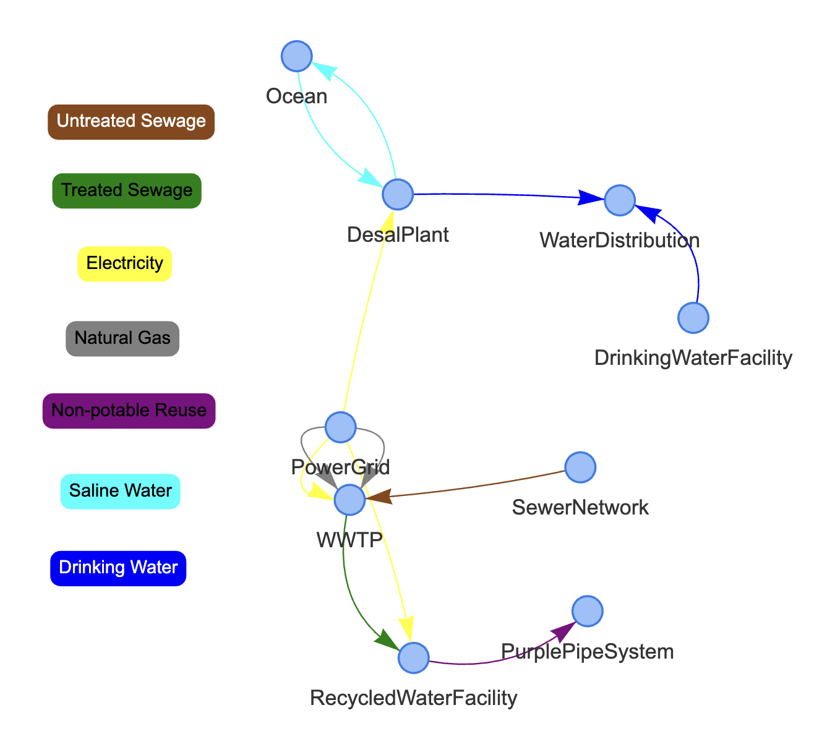

Getting Started
Loading a PyPES Model
For most users, the first step to using PyPES will be to pip install the Python package:
pip install pype-schema
This installation should come with a sample facility configuration represented by sample.json. To load this facility, run the following code from the pype_schema/data folder:
from pype_schema.parse_json import JSONParser
parser = JSONParser("sample.json")
network = parser.initialize_network()
Model Structure
The visualize module can be used to view the loaded PyPES representation with either of the pyvis or networkx packages.
from pype_schema.visualize import draw_graph
pyvis = True
draw_graph(network, pyvis)
Running the above code should produce the following HTML visualization:
{kind=link}
PyPES models can have nodes nested within nodes. For example, the WWTP node nested inside the top-level network can be visualized as follows:
node_id = "WWTP"
draw_graph(network.get_node(node_id), pyvis)
{kind=link}
Now, let’s discuss some of the components of the graph.
Connection
Conceptually, connections are objects in a WRRF that act as a vector to transport contents from a source to a destination.
In practice, there will be an abstract Python class Connection with two subclasses: Pipe and Wire. Representing Connections contains tables with
required attributes (e.g., source, destination) and optional attributes of those classes (e.g., diameter, contents).
All Connection objects have a dictionary of tags with the tag IDs as keys and Tag or VirtualTag objects as values.
Node
Conceptually, nodes are objects that represent a wide variety of entities, from clarifiers, aerators, and filters for treatment to batteries, pumps, and cogenerators for energy modeling.
In practice, there will be an abstract Python class Node with many subclasses. Representing Nodes contains tables with all the potential node classes (e..g, Tank, Filtration, Battery, etc.), r
equired attributes of those classes (e.g., id, contents), and optional attributes of those classes (e.g., volume, contents).
All Node objects have a dictionary of tags with the tag IDs as keys and Tag or VirtualTag objects as values.
Tag
Conceptually, tags are sensors that collect WRRF data, such as flow rate or temperature. They are not a part of the graph like nodes or connections, but are associated with nodes and connections along with other attributes.
Each Tag object contains attributes related to data being collected, such as the string ID, type of measurement, and units
(see Representing Tags for more details).
Modifying the Model
The graphical representation of the facility can be modified programmatically. This can be useful for modeling upgrades to existing infrastructure by seamlessly comparing two configurations side-by-side.
For example, to add a 10,000 gallon storage tank at 1,000 meters elevation to the water distribution network:
from pype_schema.node import Tank
from pype_schema.utils import parse_quantity, ContentsType
volume = parse_quantity(10000, "gal")
elevation = parse_quantity(1000, "m")
# create the battery node
tank = Tank(
"StorageTank",
ContentsType.DrinkingWater,
ContentsType.DrinkingWater,
elevation,
volume
)
# add the node to the facility
wds = network.get_node("WaterDistribution")
wds.add_node(tank)
Now that there is a node inside the water distribution network, the connection can be modified to have an
entry_point. The entry_point and exit_point attributes allow a user to specify the subnode to which
a connection is starting or ending at when the connection goes between levels in the graph. For example, in this
case we want to specify that the drinking water treatment plant effluent goes not only to the water distribution
network, but to a specific storage tank within the distribution network:
from pype_schema.connection import Connection
wds_conn = network.select_objs(
source_id="DrinkingWaterFacility",
dest_id="WaterDistribution",
obj_type=Connection
)[0]
wds_conn.entry_point = tank
The next section, Querying the Model, explains querying using select_objs in further detail.
Rather than adding components to the model one-by-one in Python, a user can edit the JSON file directly and then re-load the model (see JSON Representation)
Querying the Model
PyPES offers built-in search capabilities that allow users to find nodes, connections, and tags matching desired characteristics.
Modeling applications can be generalized through the use of these queries. For example, to calculate the
natural gas purchases at a facility without knowing how many boilers or cogenerators (if any) exist, a user
could query for all connections with ContentsType are NaturalGas entering the WWTP node:
ng_conns = network.select_objs(
dest_id="WWTP",
contents_type=ContentsType.NaturalGas,
obj_type=Connection,
recurse=True
)
Its often more convenient to get all the tags directly. Then, if the data is in CSV format the tags correspond to column names that can be operated on:
from pype_schema.tag import Tag
import pandas as pd
df = pd.read_csv("sample_data.csv")
ng_tags = network.select_objs(
dest_id="WWTP",
contents_type=ContentsType.NaturalGas,
obj_type=Tag,
recurse=True
)
ng_tag_ids = [tag.id for tag in ng_tags]
ng_import_timeseries = df[ng_tag_ids].sum(axis=1)
Then, ng_import_timeseries could be used for whatever application the user desires.
For example, to plot the natural gas imports over time:
import matplotlib.pyplot as plt
for tag in ng_tags:
plt.plot(df[tag.id], label=tag.id)
plt.plot(ng_import_timeseries, label="TotalGasPurchases")
plt.xlabel("Hour")
plt.ylabel("Natural Gas Imports (m$^3$ / day)")
plt.legend(loc='upper right', bbox_to_anchor=(1.45, 1.0))
plt.savefig("ng-imports.png", bbox_inches="tight")
{kind=link}
Unit IDs are used to specify identical parallel processes.
For example, a cogenerator may have two engines.
Therefore, dest_unit_id was specified as “total” because there may be unit-level tags,
and summing both unit-level and total tags would lead to overcounting.
There are a number of optional arguments to select_objs, most of which default to None. The function is
fully documented in node.Node.select_objs.